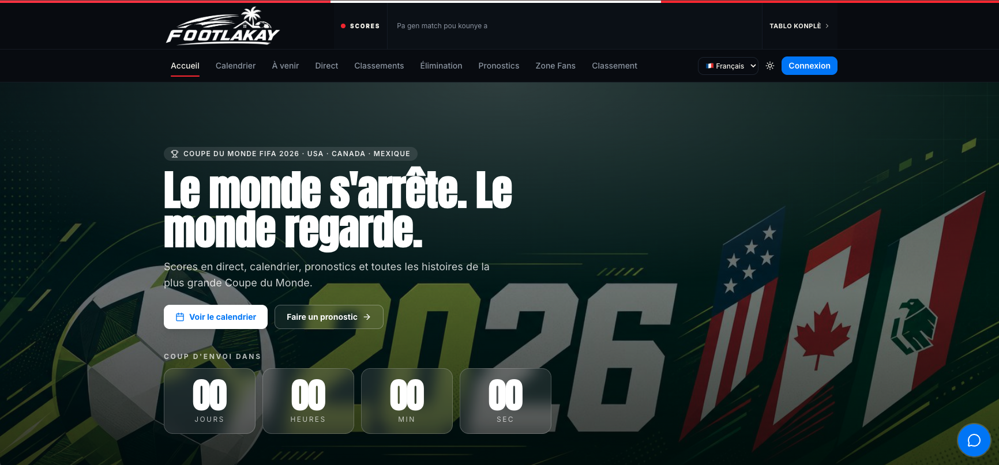

UX engineering / product strategy / full-stack build
FootLakay
A live World Cup prediction and fan platform for the Haitian diaspora, built around matchday habit, community, language parity, and trust.
Read case study -> View live product ->